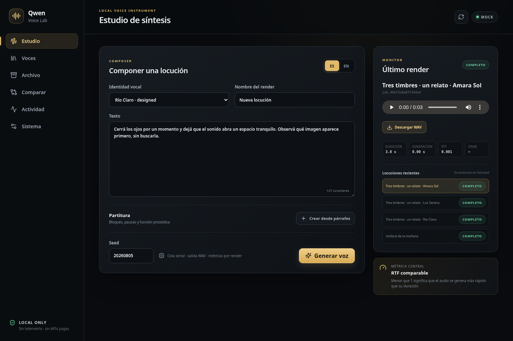
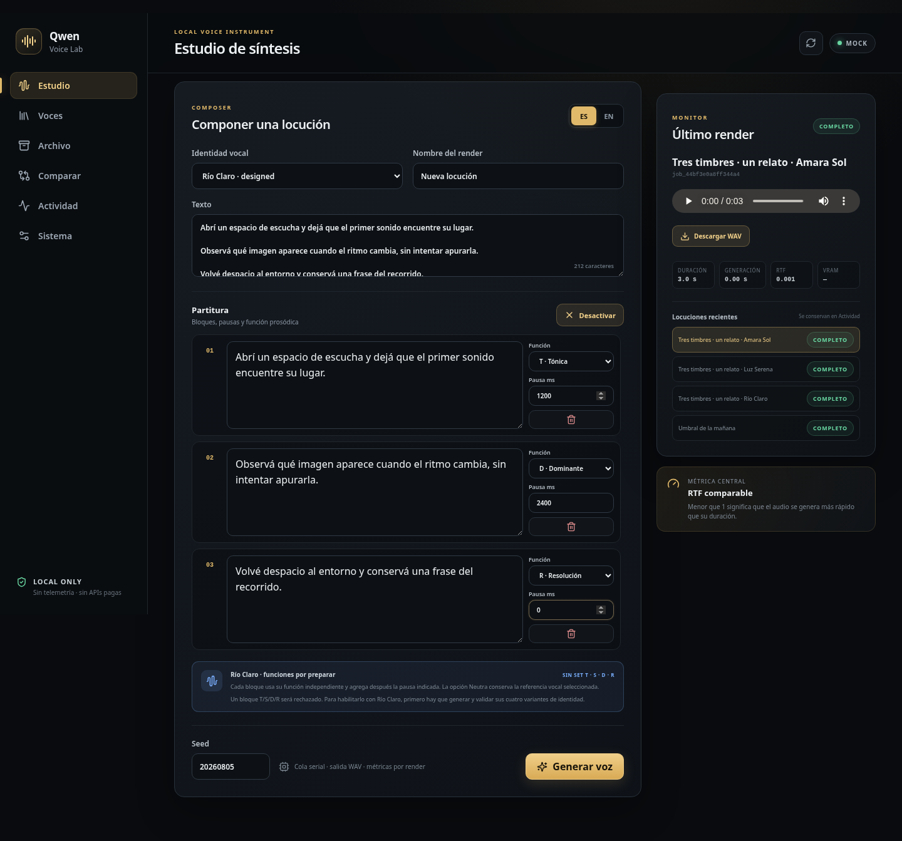
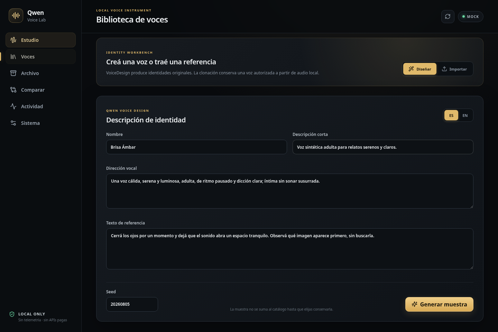
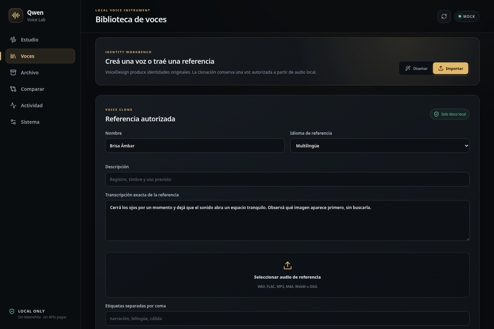
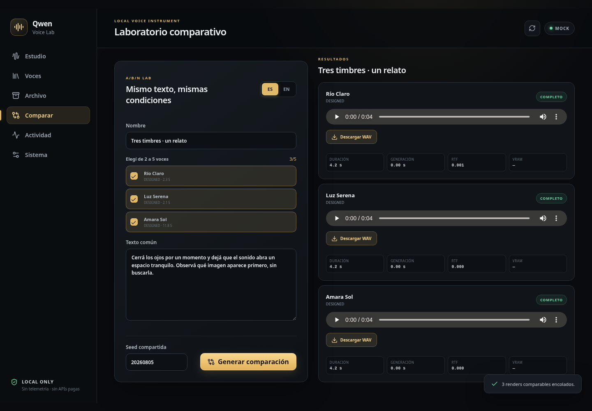
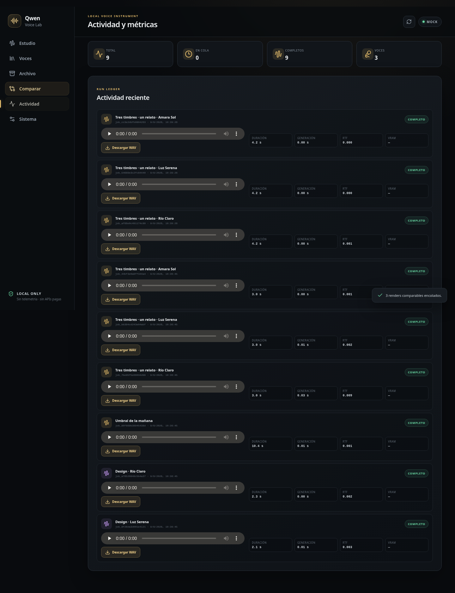
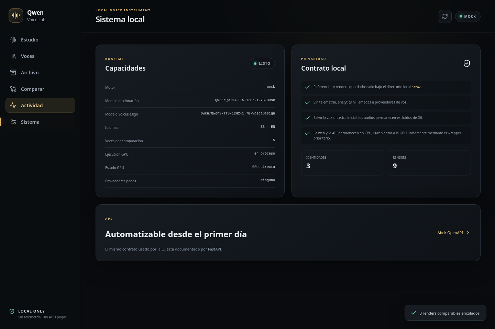

Estudio
Elegí voz e idioma, escribí el texto y generá una locución simple o por bloques.
Diseñá identidades sintéticas, importá referencias autorizadas, componé partituras, compará timbres y descargá locuciones WAV desde una sola interfaz local.
Antes de empezar
La navegación izquierda ordena el ciclo completo: crear o incorporar una voz, producir audio, comparar resultados y recuperar cada trabajo.
Elegí voz e idioma, escribí el texto y generá una locución simple o por bloques.
Diseñá identidades originales o importá una referencia con autorización explícita.
Escuchá referencias, pruebas y locuciones conservadas en esta instalación.
Enviá el mismo texto, idioma y seed a entre dos y cinco voces.
Seguí la cola, reproducí resultados anteriores y descargá cada WAV.
Consultá motor, modelos, límites, privacidad y disponibilidad de GPU.
Usá una identidad existente o creá una nueva.
Definí idioma, contenido y seed.
La cola procesa un trabajo por vez.
Validá dicción, ritmo e identidad.
El resultado queda disponible como WAV.
Estudio

123456Seleccioná una voz del catálogo local.
Usá un título reconocible: después aparecerá en Actividad.
Elegí ES o EN y revisá el texto completo antes de enviar.
Conservá la misma seed cuando quieras comparar condiciones.
Muestra estado, audio, progreso y el resultado más reciente.
Al completar, reproducí o descargá el WAV sin buscar archivos internos.
Partitura
“Crear desde párrafos” convierte cada párrafo en un bloque editable. Cada bloque conserva su texto, su función y el silencio que se agrega después.

1234Podés editar texto y orden antes de renderizar.
Neutra, T, S, D o R se eligen por bloque.
2400 significa 2,4 segundos de silencio después de ese bloque.
La interfaz avisa si la identidad no tiene un set T/S/D/R completo.
Voces · VoiceDesign
Nombrá la identidad y registrá su uso previsto.
Describí edad aparente, timbre, ritmo, dicción y límites expresivos.
Usá una frase suficiente para evaluar pronunciación e identidad.
La muestra entra a la cola y aparece en “Diseños recientes”.
Escuchá; si funciona, elegí “Agregar a mis voces”.

12345Voces · Clonación

1234Nombre, idioma de referencia y descripción de uso.
Escribí lo que realmente se oye; no una versión corregida.
Admite WAV, FLAC, MP3, M4A, WebM y OGG.
La casilla es obligatoria y registra la confirmación del operador.
Comparar

1234La selección queda visible antes de encolar.
Todas reciben exactamente el mismo contenido e idioma.
Mantiene una condición de generación comparable.
Cada voz conserva audio, descarga y métricas propias.
Actividad
Cambiar de pestaña no borra un trabajo. El monitor muestra el último render y Actividad conserva el historial durable de la instalación.
En cola, renderizando, completo, error o cancelado.
Escuchá el resultado sin descargarlo primero.
El botón está junto a cada trabajo completo.
Duración, generación, RTF y VRAM quedan asociadas al trabajo.

1234Sistema

1234Confirma si la instancia usa mock o Qwen y qué modelos declara.
En instalaciones compartidas, Qwen se carga bajo demanda mediante el wrapper.
Sin telemetría ni proveedores pagos; activos nuevos fuera de Git.
La misma API de la interfaz puede automatizarse.
Salida rápida
La cola es serial o el modelo se está cargando. Observá el monitor; no dupliques el pedido.
Un servicio prioritario desplazó el worker. Esperá y generá otra vez cuando el sistema vuelva a estar disponible.
No es un error del texto. Esa identidad no tiene un perfil completo: usá Neutra o prepará y validá las cuatro variantes.
Abrí Actividad o Locuciones recientes. Cada trabajo completo ofrece reproducción y descarga WAV.
En Voces → Diseños recientes, elegí “Agregar a mis voces”. Recién entonces aparece en Estudio y Comparar.
Eso es lo que se evalúa. Verificá condiciones comunes y decidí mediante escucha; las métricas no reemplazan el criterio perceptual.
docs/AGENT_USAGE_GUIDE.md.